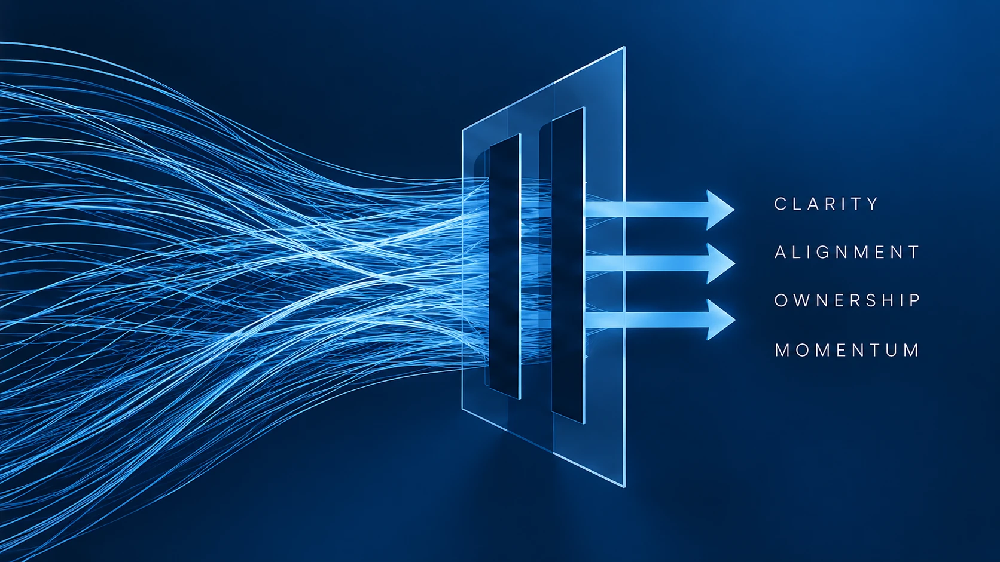

Energy & Culture
Create the execution impulse: a culture where closing loops, taking ownership and moving from discussion to action becomes normal.

DiagnoseAlignDeliver
People are busy.
Projects are running. Meetings are full. Problems are being solved.
And yet, sometimes surprisingly little moves forward.
Activity isn’t the same as progress.
The Directional Delivery Engine was developed around a simple question:
What separates organisations that are constantly doing things from those that consistently deliver?
DDE creates the management system connecting strategic direction with daily execution.
Create the execution impulse: a culture where closing loops, taking ownership and moving from discussion to action becomes normal.
Give teams steady direction. Close decision loops quickly. Protect momentum rather than repeatedly resetting it.
Create a shared destination before execution begins. Strategy becomes something the leadership team owns together rather than something handed down by one function.
Turn execution into a system: clear commitments, ownership, dependencies, delivery standards and cadence.
Four pillars. One system.
Direction + Delivery = Momentum.
The symptoms rarely look dramatic in isolation. But when several appear at the same time, the gap between strategic intent and daily execution starts to become visible.
The strategy is clear, but execution remains inconsistent.
Too many priorities compete for the same resources.
Decisions repeatedly return to the leadership table.
Delivery depends disproportionately on a few individuals.
Growth has exposed weaknesses in the operating model.
Transformation initiatives are running, but momentum is difficult to see.
These are rarely six separate problems. More often, they are different symptoms of the same gap between direction and delivery.
Understand where the organisation is today, where momentum is being lost and what needs to change.
Establish direction, management rhythm, ownership and the delivery system — and run the first cycles together.
Turn the new ways of working into organisational habits and remove remaining structural bottlenecks.
The objective isn’t dependency on an advisor.The objective is an engine that runs without one.
Discuss DDE →